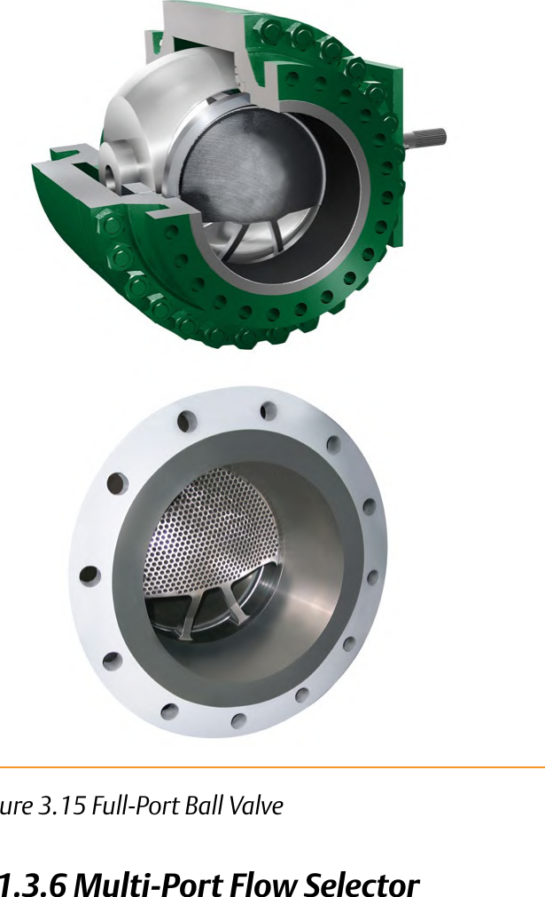

Full-Port Ball vs. Eccentric Plug
Full-port ball (trunnion-mounted)

An unrestricted, straight-through bore when open — little or no flow restriction, fire-tested for bypass, batch, and emergency shutoff service
Eccentric plug

The disk swings out of the seat on an off-center shaft — the same wear-reducing idea a butterfly's offset shaft uses, for erosive or hard-to-handle fluids
After Control Valve Handbook, 6th ed., Figs. 3.15, 3.13 — used directly. Component Index: cvh-cmp-full-port-ball-valve-trunnion, cvh-cmp-eccentric-plug-valve-body.